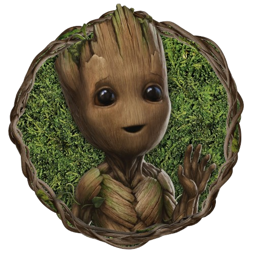
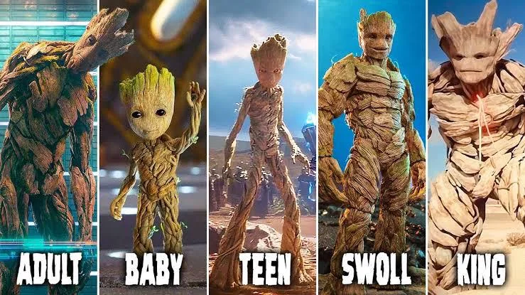

Groot é um dos personagens mais carismáticos do universo da Marvel Comics. Ele pertence à espécie conhecida como Flora Colossus, seres altamente inteligentes com aparência de árvores humanoides.
Mesmo sendo limitado na fala, repetindo apenas a frase “I am Groot”, ele consegue se comunicar de maneira emocional e contextual.
Seus amigos, especialmente Rocket Raccoon, conseguem entender perfeitamente o que ele quer dizer.
Groot se destaca por sua personalidade gentil, inocente em alguns momentos e extremamente protetora com aqueles que ama.

Fisicamente, Groot possui um corpo formado por madeira, galhos e raízes. Sua aparência muda conforme sua fase de vida:
Adulto: alto, forte, com aparência imponente
Baby Groot: pequeno, fofo, com comportamento infantil
Teen Groot: mais rebelde e despreocupado
Forma jovem-adulta: mistura de força e maturidade
Seus olhos são expressivos, o que ajuda muito na comunicação não verbal.
